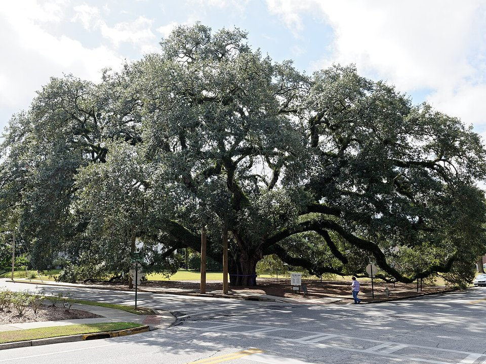

Downtown · Hotel
Courtyard Thomasville Downtown
A newer hotel within walking distance of the shops.
Official details for Courtyard Thomasville DowntownRoses, plantations and a brick downtown.
In the late 1800s, wealthy Northerners came to Thomasville by train for the winter, and they left behind Victorian homes and grand quail-hunting plantations. Today the brick downtown is full of shops and restaurants. Land at Thomasville Regional, stay downtown or at the 1884 Paxton House Inn, tour Pebble Hill Plantation, see the Big Oak, taste cheese at Sweet Grass Dairy and come in April for the Rose Show.

We’re flying ourselves there in a small airplane.
Where we’re staying Dinner Things to do The plan
Your pilot handles the flight planning and weather; this page is for the fun part. Pilot view
Time illustration: direct distance at 150 KTAS plus 15 minutes for departure and arrival, matching the discovery page. Use ForeFlight for your actual flight plan.
Check the weekend weather at both ends → Flight category, your minimums and the crosswind on the best runway.
More in Aviation & getting around below. Crew cars change often: call the FBO before you go. How to have a rental car waiting at the FBO · Know something we missed? Tell us.
KTVI, Thomasville Regional, is a non-towered city airport at 264 feet with runways of 6,004 and 4,999 feet, about 10 minutes from downtown.
Thomasville Regional Airport, Thomasville, GA
The city runs the fuel and terminal; RL Aviation and Plane Cents Aero Services are also on the field. Tallahassee’s Class C airspace is about 30 miles south. No live fuel price is shown.
Southeast flying: summer afternoon thunderstorms and haze, morning fog in the cooler months, spring squall lines, and tropical weather from June to November. About 300 nm from Myrtle Beach.
Rates and availability need travel dates. Rose Show weekend books early.
A newer hotel within walking distance of the shops.
Official details for Courtyard Thomasville DowntownA Queen Anne Victorian under old live oaks, with 12-foot ceilings.
Official details for Thomasville Bed and BreakfastA Victorian Gothic mansion with rooms in the house and cottages.
Discover Thomasville for 1884 Paxton House InnInns and hotels.
Discover Thomasville for More places to stayPrices and availability for your dates, through our partner Stay22. This is an affiliate link: we may earn a commission at no cost to you. The picks above are never paid.
Reserve weekend dinners.
Seafood and a Greek salad locals swear by.
Official details for George & Louie’sFarm-to-table steaks and seafood on Broad Street.
Official details for Chop House on the BricksA refined downtown restaurant known for wine and cheese.
Explore Georgia for Liam’sShrimp and grits downtown.
Discover Thomasville for Jonah’s Fish & GritsA local roaster with breakfast and lunch.
Official details for Grassroots CoffeeAward-winning local cheese at a downtown shop and café.
Official details for Sweet Grass DairyRestaurants in Thomasville.
Discover Thomasville for More restaurantsSpring is the prettiest season.
This prototype links to the local visitor site. It does not yet match events to your travel dates.
Thomasville’s roses and a parade.
Discover Thomasville for Rose Show & FestivalDowntown in Victorian dress.
Discover Thomasville for Victorian ChristmasAzaleas, roses and mild weather.
Discover Thomasville for SpringCheck the local calendar when choosing a weekend, and confirm dates and tickets with the organizer.
A sample Thomasville weekend. No bookings or availability confirmed.
Land at KTVI mid-morning.
Shrimp and grits downtown.
A short walk, then back to the airport.
Land at KTVI, subject to weather and your actual flight plan.
Walk downtown and see the Big Oak.
Dinner at George & Louie’s.
Pebble Hill Plantation.
Sweet Grass Dairy.
Dinner downtown.
Coffee and shops.
Allow time at the FBO before departure.
Afternoon thunderstorms are common in summer; leave in the morning.
Pebble Hill Plantation.
Explore.
Dinner in town.
These details make the difference between an appealing list and a usable getaway.
Lodging, then plantation tour times.
About 300 nm from Myrtle Beach: an easy morning flight.
Check Pebble Hill’s seasonal hours before you go.
March to May and October to December.
Picks and links reviewed by WingAway Weekends. Hours, prices, menus and availability change often, so confirm directly with each place before booking. Spotted something out of date, or have a favorite we missed? Email us at hello@wingawayweekends.com.
WingAway Weekends helps you discover the destination. Use ForeFlight and current official aviation information for route, performance, weather, NOTAMs and preflight decisions. Flight planning and PIC responsibility stay with the pilot.